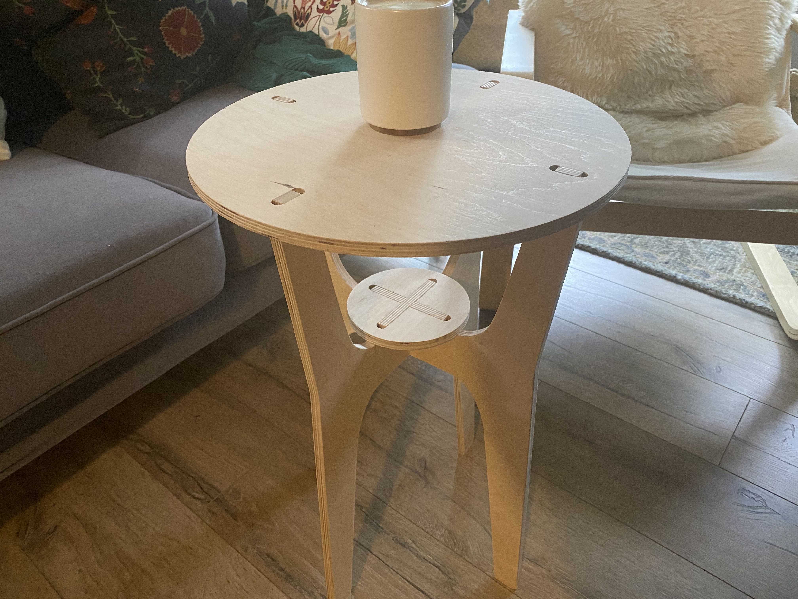

I’ve been admiring Nadya’s lifelong pursuit of knowing how to make almost anything for long. I’m glad that she makes a version of advanced digital fabrication class available available at UW the first year I join UW. Nadya knows how to have fun. We’ve been drowning in a lot of fun taking this course.
This is a presentable product from me after a teachable failure of making unrealistically sized furniture. It is designed as a plant stand, has two tiers, is capable of housing one small plant and one large plant. But it’s also a functional coffee table or laptop stand.
